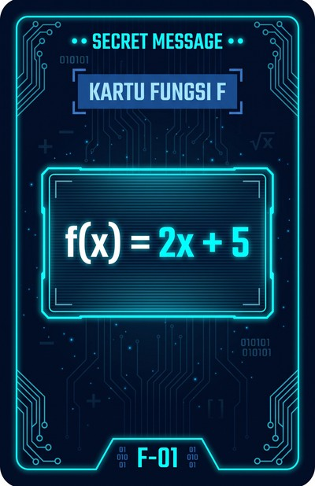
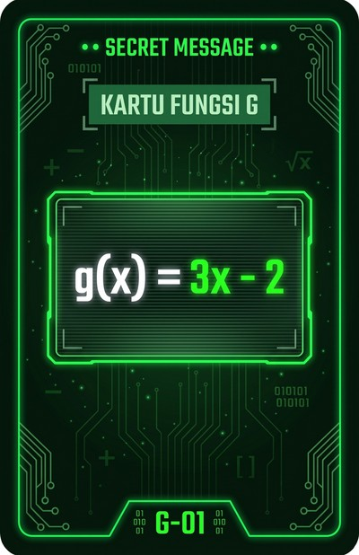

PERAN: PENGIRIM PESAN (ENKRIPSI)
Kalkulator & Modul Belajar Komposisi
Pilih kartu fungsi atau tempelkan kartu ber-NFC, lalu amati bagaimana aljabar bekerja menggabungkan dua fungsi menjadi sandi rahasia.
1. Kartu Fungsi f(x)
F-01

Rumus Terpilih:
f(x) = 2x + 5
2. Kartu Fungsi g(x)
G-01

Rumus Terpilih:
g(x) = 3x - 2
3. Urutan Komposisi
Pilih Operasi
Rumus Enkripsi Tunggal:
(g ∘ f)(x) = 6x + 13
A=1 s/d Z=26, Spasi=0
Klik Cepat dari 32 Kartu Kata Resmi:
Pembahasan Aljabar & Langkah Pembelajaran Siswa
Amati bagaimana rumus diturunkan dan setiap karakter dienkripsi.
Tahap 1: Pembuktian Rumus Komposisi (6 Langkah)
Aljabar Lengkap
Tahap 2: Bedah Contoh Karakter Pertama
Contoh Nyata
Kenapa Karakter Spasi Dihitung sebagai Bilangan 0?
Jika spasi tidak dienkripsi, musuh bisa dengan mudah menebak pola kata berdasarkan panjangnya. Dengan menganggap spasi sebagai x = 0, spasi akan menghasilkan angka konstan 13, sehingga jarak kata tetap terlindungi secara aman!
Tahap 3: Tabel Kuantifikasi & Evaluasi Sandi
Geser →
| No | Karakter | Nilai Asli (x) | Proses Substitusi Fungsi | Kode Sandi (y) |
|---|
DERETAN ANGKA SANDI (SIAP DISERAHKAN KE PENERIMA):
19, 37, 67, 79, 13, 91, 19, 67, 97, 13, 25, 103, 85, 19
Tersinkronisasi langsung dengan Tab Dekripsi untuk validasi dan pembelajaran murid.